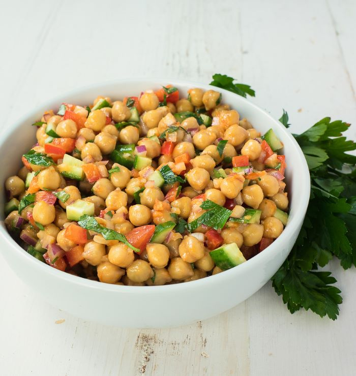

Chickpea Salad With Vinaigrette

Chickpea salad with sun-dried tomato vinaigrette comes together in no time
Serve it with grilled chicken or as a stand-alone vegetarian lunch.
Information
- Prep Time : 10 minutes
- Cook Time : 5 minutes
- Total Time : 15 minutes
- Servings : 6
- Calories :408 kcal
Ingredients
- 38 oz canned chickpeas
- 1 red pepper diced
- 1/2 large red onion diced
- 2 Lebanese cucumbers diced
- 2 cloves garlic crushed
- 1/2 cup parsley chopped
For Sun-dried tomato vinaigrette
- 26 sun-dried tomatoes in oil
- 2 tbsp lemon juice
- 1/2 tsp mustard seed
- 1/4 cup olive oil
- enough water to blend 2 or 3 Tbsp
- 1/2 tsp salt
- black pepper to taste
Steps
- Blend all the dressing ingredients together.
- Combine the chickpeas, red pepper, onion, garlic, parsley.
- Mix in the dressing.
- Let sit at room temperature for about an hour.
- Add the diced cucumber.
Back To Home Page